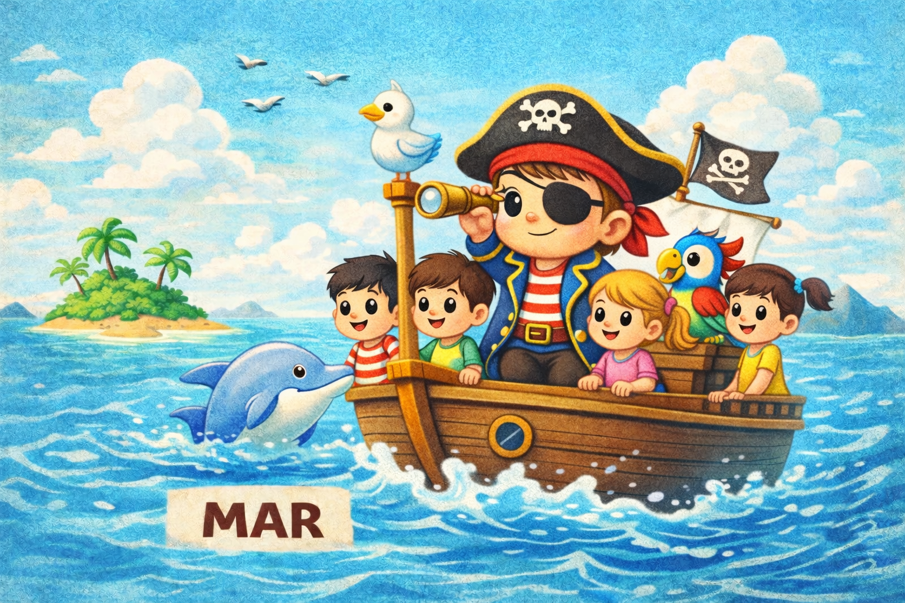
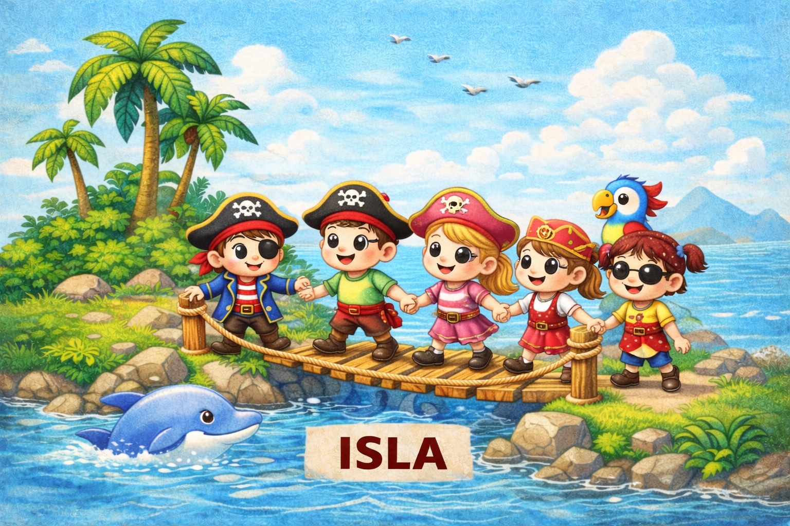

Había una vez un niño llamado Mario, que soñaba con ser pirata. Con un mapa entre las manos, él y sus compañeros miran el dibujo del tesoro.
El mapa muestra el mar, una isla, una playa y una montaña. Mario sonríe y pregunta: «¿Empezamos el viaje juntos?». Toca una de las zonas para comenzar.

Mario y sus compañeros suben a un pequeño barco y navegan por el mar. Las olas se mueven suavemente. De repente, una ola un poco grande les asusta.
Mario recuerda: «Cuando algo asusta un poquito, respiramos profundo y contamos hasta tres». Todos respiran juntos y el miedo se convierte en risas.
Uno sostiene el timón mientras otro observa las nubes. Al final del día, el mar se vuelve amigo.

Mario y sus compañeros llegan a una isla misteriosa pero amable. En la orilla ven árboles altos y flores curiosas. Para explorar, necesitan cruzar un puente de ramas.
Mario intenta solo, pero se detiene. Sus compañeros le dicen: «Pedir ayuda es valiente». Agarrados de las manos, cruzan juntos.